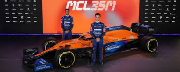
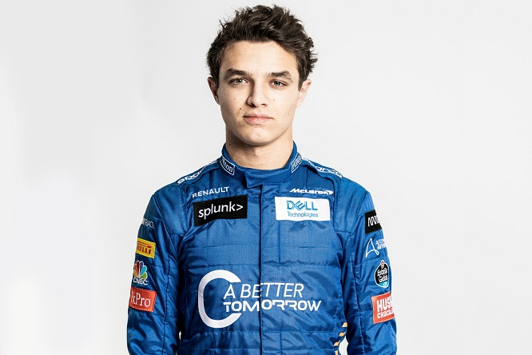
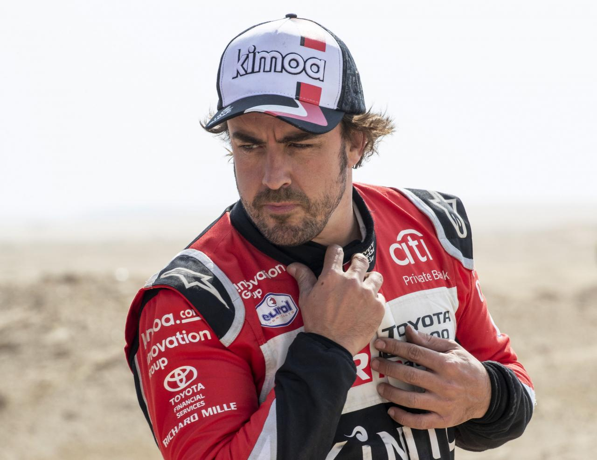

PRIMO SGUARDO: McLaren svela la MCL35M con motore Mercedes che sarà pilotata da Ricciardo e Norris nel 2021
La McLaren è diventata la prima squadra di F1 a svelare la sua vettura 2021, montando le copertine della McLaren MCL35M che sarà pilotata dal nuovo paio di piloti della squadra di Daniel Ricciardo e Lando Norris in questa stagione.

News
Norris si aspetta di assumere `` più un ruolo di leadership '' alla McLaren nel 2021
Feb 16
Continua a leggere...

News
Alonso dimesso dall'ospedale per continuare il recupero dall'incidente in bicicletta
Feb 15
Continua a leggere...

Pilota del giorno
George William Russell (King's Lynn, 15 febbraio 1998) è un pilota automobilistico britannico, pilota della Williams. Si è laureato campione della GP3 Series 2017 e della Formula 2 2018. Dal 2019 è attivo in Formula 1 con la Williams, a parte per un’esperienza in Mercedes nel 2020. Il suo numero di gara è il 63.